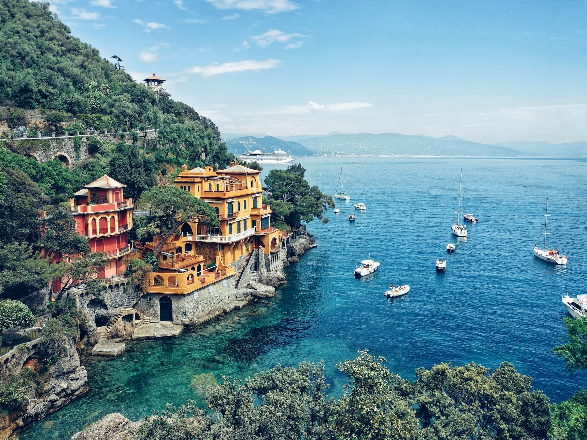

Italia
Italia es uno de los destinos turísticos más populares del mundo, conocido por su rica historia, arte, arquitectura y gastronomía. Roma es famosa por sus ruinas antiguas, incluyendo el Coliseo Romano y el Foro Romano, mientras que Florencia es el hogar de la galería Uffizi y la famosa catedral de Santa Maria del Fiore. Venecia es conocida por sus canales y góndolas, y es un destino popular para luna de miel.
